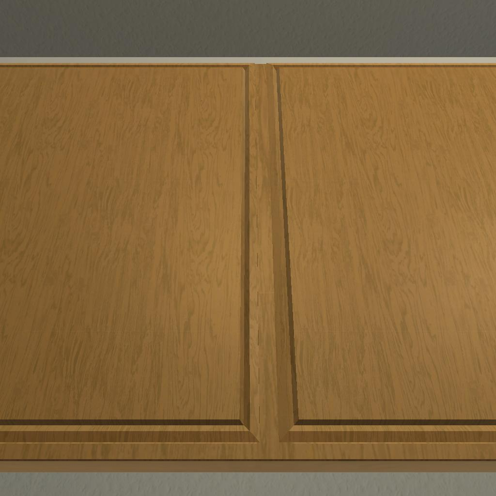

---------------------------------------------------------task: 20---------------------------------------------------------
--------------------------------------------------------------------------------------------------------------------------------------------------------------------
--------------------------------------------------------------------------------------------------------------------------------------------------------------------
Step:--------------------------------------------------------------------------10-------------------------------------------------------------------------------
----------------------------------------
VLM Prompt:
**Task**
Please perform as an embodied AI agent. Our final objective is to put a hot apple in garbagecan. Below is the plan for completing the task, the current observation, alongside historical data and admissible actions for the next step. Please determine the best action for the next step!
**Plan**
Below is a detailed step-by-step plan to complete the task.
1. Find an apple.
2. Pick up the apple.
3. Find a microwave.
4. Heat the apple with the microwave.
5. Find a garbage can.
6. Place the heated apple in the garbage can.
**Current Observation**
Displayed is an image capturing the current position of the agent.
**History Information**
Displayed are the previous observations with their corresponding actions.
State 0:
No history.
State 1:
1. Step Index in the Plan: 1
2. Objects: Tray, Sink, Apple
3. Action: go to sink 1
State 2:
1. Step Index in the Plan: 2
2. Objects: Apple, Potato, Knife, Forks (2), Faucet
3. Action: take apple 1 from sink 1
State 3:
2. Step Index in the Plan: 2
3. Objects: Sink, Tray, Apple, Potato, Knife, Two Forks
4. Action: go to microwave 1
State 4:
1. Step Index in the Plan: 4
2. Objects: Microwave, Apple
3. Action: open microwave 1
State 5:
1. Step Index in the Plan: 4
2. Objects: Microwave (open), Apple
3. Action: put apple 1 in/on microwave 1
State 6:
1. Step Index in the Plan: 4
2. Objects: Microwave, Apple, Plate
3. Action: close microwave 1
State 7:
1. Step Index in the Plan: 4
2. Objects: Microwave, Apple
3. Action: take apple 2 from microwave 1
State 8:
1. Step Index in the Plan: 5
2. Objects: Microwave, Apple (inside microwave), Apple (on countertop)
3. Action: go to garbagecan 1
State 9:
1. Step Index in the Plan: 5
2. Objects: Apple, Garbage Can
3. Action: put apple 2 in/on garbagecan 1
State 10:
1. Step Index in the Plan: 5
2. Objects: Garbage Can, Apple
3. Action: go to cabinet 1
**Admissible Actions**
(1): go to cabinet 2
(2): go to countertop 1
(3): go to cabinet 3
(4): go to cabinet 4
(5): go to cabinet 5
(6): go to sink 1
(7): go to cabinet 6
(8): go to drawer 1
(9): go to drawer 2
(10): go to sinkbasin 1
(11): go to cabinet 7
(12): go to cabinet 8
(13): go to coffeemachine 1
(14): go to microwave 1
(15): go to cabinet 9
(16): go to countertop 2
(17): go to cabinet 10
(18): go to drawer 3
(19): go to drawer 4
(20): go to drawer 5
(21): go to cabinet 11
(22): go to cabinet 12
(23): go to cabinet 13
(24): go to cabinet 14
(25): go to stoveburner 1
(26): go to countertop 3
(27): go to stoveburner 2
(28): go to stoveburner 3
(29): go to stoveburner 4
(30): go to drawer 6
(31): go to cabinet 15
(32): go to cabinet 16
(33): go to cabinet 17
(34): go to cabinet 18
(35): go to toaster 1
(36): go to drawer 7
(37): go to countertop 4
(38): go to fridge 1
(39): open cabinet 1
(40): close cabinet 1
**Analysis Guideline**
1. Analyze the history and current observation, and then determine our current step in the plan and our current place.
2. List all visible objects related to the task in the current observation, without summarizing any as "various items."
3. Analyze the objects in the current observation based on the history and the requirements for the current step, and then determine if we can complete the step with the current observation.
4. Analyze and decide on the most appropriate action to take.
5. Summarize the analysis using the following format: "Analysis: [The summarization of the analysis], The Most Appropriate Action: (i which is the integer.): [Selected action]"
**Notes**
1. We must complete each step of the plan in order and cannot skip steps when the previous ones are not finished.
2. For "Go to" actions listed as "go to xxx [n]", interpret this as there are n distinct actions available: "go to xxx 1", "go to xxx 2", ..., "go to xxx n". Select one specific action from these options instead of using "go to xxx [n]".
3. If receptacles such as drawers, cabinets, and so forth are closed in the current observation, we may try to open them.
4. Pay attention to synonyms and ensure clarity in the terms used.
5. We must determine and provide the single action which must be in the **Admissible Actions**.
6. If there is no history available, we are at the first step and the current place is "Unknown".
**Answer**
Please select the most suitable action by following the **Analysis Guideline**, keeping the above **Notes** in mind.
----------------------------------------
----------------------------------------
VLM Response:
Analysis: The current observation shows a closed cabinet which may contain objects relevant to our task, but we cannot see inside it without opening it. Based on the history, we have already completed up to step 5 of the plan, which involves finding a garbage can and attempting to place a heated apple inside it. However, in state 9, it appears there was an error with putting apple 2 in/on garbagecan 1, as in state 10 we are directed to go to cabinet 1, indicating that step 6 of the plan has not been completed. The current observation does not allow us to complete step 6, as we do not have a heated apple in our possession nor a visible garbage can. Therefore, we need to interact with the environment to find the garbage can again or proceed with the necessary steps to reheat an apple if required. The most appropriate next action would be to open the cabinet we are currently facing to search for either the garbage can or another apple to restart the heating process if necessary.
The Most Appropriate Action: (39): open cabinet 1
----------------------------------------
----------------------------------------
>>> Refine VLM Response and Get Pure Action: open cabinet 1
----------------------------------------
-----------------------------------------------------------------
Running time: 8.977571487426758 seconds
Total Money: 0
-----------------------------------------------------------------
-----------------------------------------------------------------
Summarization Prompt:
**Context**
Analysis: Since there is no history information, we are at the first step in the plan, which is to find a statue. The current place is unknown. In the current observation, we see a floorlamp next to an armchair with a small table that has a small object on it, which could potentially be the statue we are looking for. Since the plan requires us to find a statue first and it appears there might be one on the table next to the armchair, we should investigate this object to determine if it is the statue we need.
The Most Appropriate Action: (1): go to armchair 1
**Summary**
1. Step Index in the Plan: 1
2. Objects: Floorlamp, Armchair, Small Table, Small Object (potential statue)
3. Action: go to armchair 1
**Context**
Analysis: The current observation shows a closed cabinet which may contain objects relevant to our task, but we cannot see inside it without opening it. Based on the history, we have already completed up to step 5 of the plan, which involves finding a garbage can and attempting to place a heated apple inside it. However, in state 9, it appears there was an error with putting apple 2 in/on garbagecan 1, as in state 10 we are directed to go to cabinet 1, indicating that step 6 of the plan has not been completed. The current observation does not allow us to complete step 6, as we do not have a heated apple in our possession nor a visible garbage can. Therefore, we need to interact with the environment to find the garbage can again or proceed with the necessary steps to reheat an apple if required. The most appropriate next action would be to open the cabinet we are currently facing to search for either the garbage can or another apple to restart the heating process if necessary.
The Most Appropriate Action: (39): open cabinet 1
Please summarize the context by following above examples when providing the summary, and ensure that only the summary is included, without any extra explanation.
**Summary**
-----------------------------------------------------------------
-----------------------------------------------------------------
Summarization Response:
1. Step Index in the Plan: 6
2. Objects: Closed Cabinet
3. Action: open cabinet 1
-----------------------------------------------------------------
-----------------------------------------------------------------
Text Observation:Nothing happens.
-----------------------------------------------------------------
UNSUCCEED